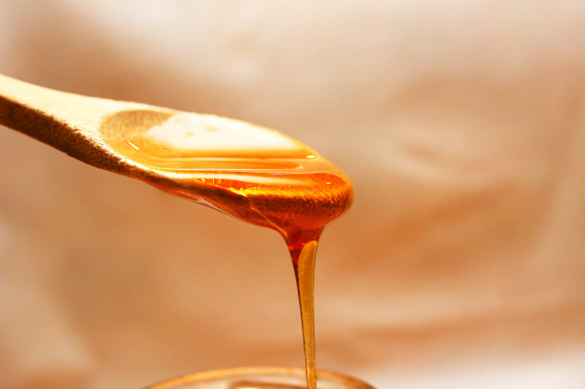
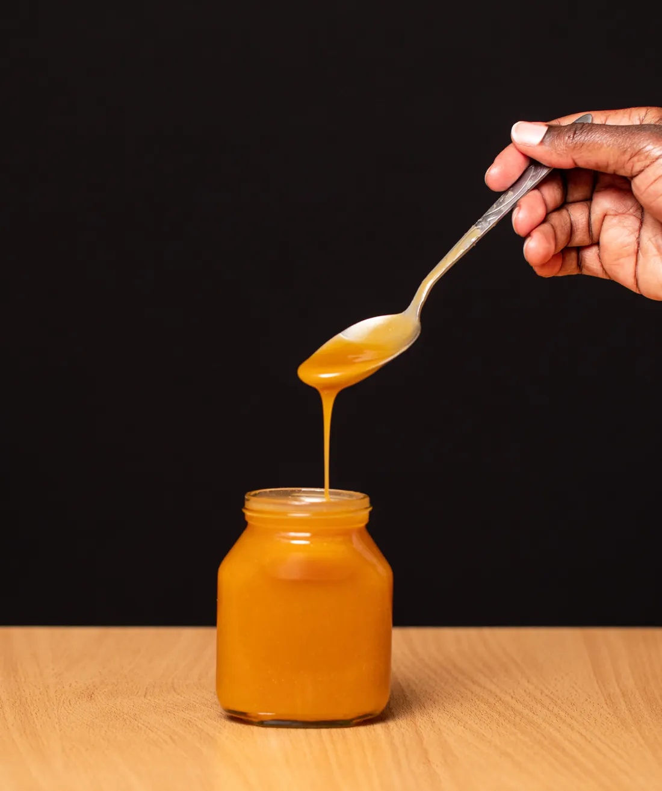
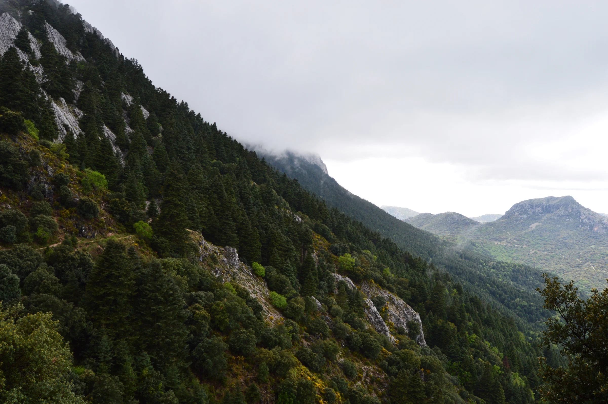

Todo empieza en el paisaje. En las flores que se abren y en las abejas que las visitan. Miel El Bosque, una marca dedicada a la apicultura, la producción y la comercialización de miel desde El Bosque, Cádiz.
Sin prisa para saborearla. Con curiosidad para descubrirla.

La miel, de cerca.
Una gota. Todo un universo.
Color, textura y matices para descubrir despacio. Fotografía ilustrativa.
Dos formas de descubrirla
Cada miel, su carácter.
Variedades documentadas de la marca. Consulta el surtido y la disponibilidad actuales directamente con nosotros.
01 / MONTE

Imagen ilustrativa de miel. No representa la variedad ni el envase reales.
Una expresión del paisaje
Miel de monte.
Una de las variedades documentadas de Miel El Bosque. La flora y el momento de recolección pueden aportar distintos matices. Pregúntanos por sus características.
Imagen ilustrativa de miel. No representa la variedad ni el envase reales.
Otra manera de saborear
Miel de madroño.
Otra variedad documentada de la marca, para quienes quieren explorar la diversidad de la miel. Consulta directamente sus matices y los formatos disponibles.
Las abejas recogen néctar de las flores. Dentro de la colmena lo transforman y reducen su humedad hasta convertirlo en miel, que almacenan en las celdillas.
La apicultura acompaña la vida de las colonias y permite recoger la miel para su consumo. Un oficio unido al ritmo de la naturaleza.
Este recorrido explica el proceso general de la miel. Las fotografías no muestran personas ni instalaciones verificadas de Miel El Bosque y no describen métodos exclusivos de la marca.

Sierra de Cádiz · Andalucía
Nuestro origen: El Bosque.
Un nombre que nos sitúa. Un entorno que nos inspira. El Bosque y la Sierra de Grazalema son la referencia de origen de la marca, en un paisaje donde la flora y las estaciones forman parte del contexto natural de la apicultura.
Pinsapar de la Sierra de Grazalema · Ángel Regatero · CC BY-SA 4.0 · Reducción, conversión y recorte visual.
Las cosas buenas empiezan con una conversación.
¿Hablamos de miel?
Conoce nuestras variedades y consulta los productos y formatos disponibles.
Llamar ↗MIEL EL BOSQUE11670 El Bosque, Cádiz625 318 041
Apicultura, producción y comercialización de miel.Buscar ubicación ↗Consulta la ubicación exacta antes de desplazarte.